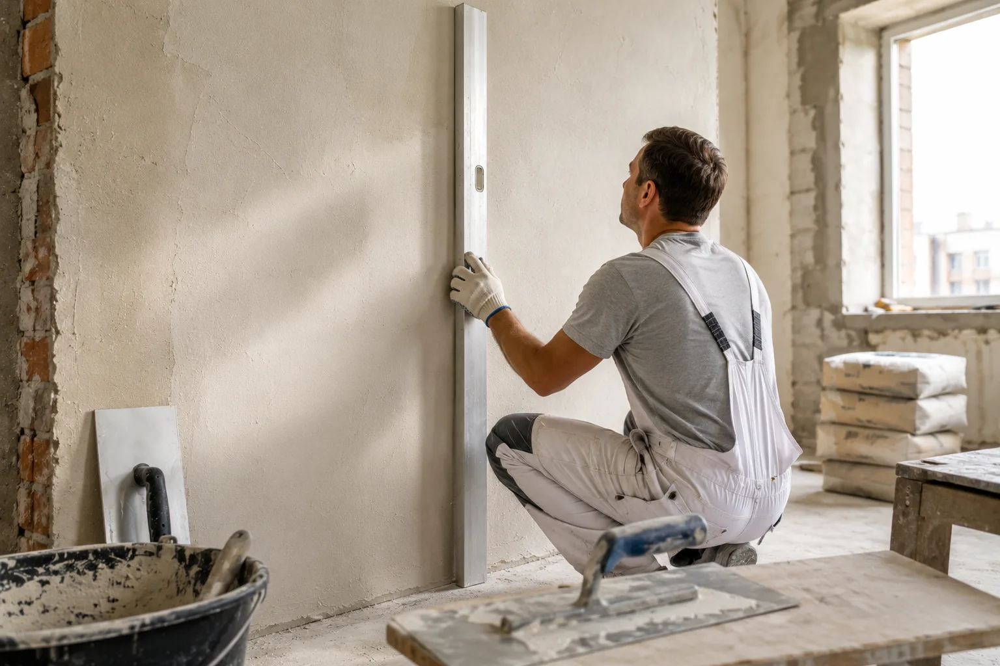
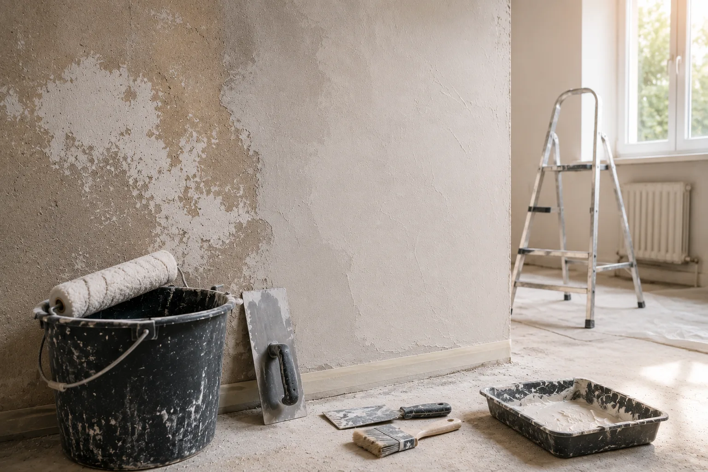

Требования к выполнению штукатурных работ: как понять, что стены сделаны правильно
Разбираем требования к выполнению и качеству штукатурных работ: что проверить при приемке стен, какие дефекты недопустимы и почему всё зависит от будущей отделки.
Разбираем требования к выполнению и качеству штукатурных работ: что проверить при приемке стен, какие дефекты недопустимы и почему всё зависит от будущей отделки.

Когда заказчик принимает штукатурные работы, он обычно смотрит на стену и задает один вопрос: ровная она или нет.
На самом деле качество штукатурки определяется не только визуальным впечатлением. Стена может выглядеть аккуратно сразу после завершения работ, но через несколько месяцев на ней появляются трещины, отслоения или заметные перепады под финишной отделкой.
Поэтому требования к выполнению штукатурных работ касаются не только результата, но и самой технологии. Важно, как подготовлено основание, соблюдены ли условия нанесения смеси и насколько точно выдержана геометрия поверхности.
Штукатурка — это база для всех последующих работ.
На неё укладывают плитку, наносят декоративную штукатурку, шпаклюют и окрашивают стены.
Если основание выполнено с нарушениями, скрыть дефекты следующими слоями отделки получается далеко не всегда. Особенно заметны проблемы под покраской, декоративными покрытиями и встроенной мебелью.
Именно поэтому ошибки штукатуров обходятся дороже всего. Исправлять приходится уже готовые стены.
Хорошая штукатурка начинается задолго до первого замеса раствора.
Перед работой основание очищают от пыли, старых покрытий и непрочных участков. Если стена впитывает влагу, её грунтуют. При необходимости устанавливают армирующую сетку.
Часто проблемы появляются именно на этом этапе. Раствор наносят на неподготовленную поверхность, и спустя время штукатурный слой начинает отслаиваться.
Поэтому качество будущей стены во многом зависит от подготовки основания.
Во время работ важно соблюдать несколько базовых правил.
Раствор должен наноситься на прочное основание. Каждый слой обязан успевать набирать прочность до начала следующего этапа. Помещение должно иметь подходящий температурный режим и нормальную влажность.
Кроме того, мастер должен постоянно контролировать геометрию поверхности при помощи правила, уровня и других измерительных инструментов.
Даже дорогая штукатурная смесь не компенсирует нарушения технологии.
После завершения работ оценивается уже не процесс, а результат.
Заказчика обычно интересует один вопрос: насколько ровной должна быть стена.
Требования к качеству штукатурных работ зависят от категории отделки, но в любом случае поверхность должна быть прочной, без трещин, раковин и отслоений.
Также проверяют вертикальность стен, качество углов и плоскость поверхности.
Перед приемкой стоит провести несколько простых проверок.
| Что проверяют | На что обратить внимание |
|---|---|
| Плоскость стены | Нет заметных волн и провалов |
| Вертикальность | Стена не имеет отклонений от уровня |
| Углы | Сохраняют правильную геометрию |
| Прочность | Нет осыпания и рыхлых участков |
| Поверхность | Отсутствуют трещины, наплывы и раковины |
Многие дефекты становятся заметны только при боковом освещении. Поэтому принимать работы лучше днем или использовать мощный направленный свет.
Хорошая штукатурка выглядит достаточно скучно.
На поверхности нет заметных переходов, бугров и следов инструмента. Углы остаются ровными, а сама стена выглядит единой плоскостью.
При прикладывании длинного правила не появляются значительные зазоры. После высыхания поверхность не осыпается и не покрывается сеткой трещин.
Именно такая штукатурка позволяет без проблем переходить к следующему этапу ремонта.
Большинство проблем повторяются из объекта в объект.
К ним относятся:
На момент сдачи объекта многие из этих ошибок могут быть незаметны. Основные последствия проявляются уже после финишной отделки.
Не все стены требуют одинаковой точности.
Если планируется укладка крупноформатной плитки, требования одни. Если стены будут окрашиваться или покрываться венецианской штукатуркой — значительно выше.
| Финишная отделка | Требования к штукатурке |
|---|---|
| Обои | Допускаются небольшие неровности |
| Декоративная штукатурка | Требуется ровная и стабильная поверхность |
| Покраска | Высокие требования к геометрии |
| Венецианская штукатурка | Практически идеальная плоскость |
| Крупноформатная плитка | Минимальные отклонения по уровню |
Поэтому оценивать качество штукатурки всегда нужно с учетом будущей отделки.
Есть признаки, которые нельзя считать допустимыми.
Поводом для замечаний могут быть:
Если такие дефекты присутствуют, устранить их лучше до начала следующего этапа ремонта.
Перед окончательной приемкой стоит пройтись по простому чек-листу:
Пять минут проверки могут сэкономить недели переделок после завершения ремонта.
Требования к выполнению штукатурных работ касаются не только внешнего вида стены, но и всей технологии работ. Качественная штукатурка должна быть прочной, ровной и готовой к последующей отделке.
Если говорить простыми словами, хорошая штукатурка — это стена, о которой вы перестаете думать после завершения ремонта. Она не трескается, не требует исправлений и позволяет спокойно переходить к декоративной отделке, покраске или укладке плитки.

Как проверить основание, когда нужна шпаклевка или штукатурка, зачем грунтовать стены и какие ошибки портят декоративное покрытие.

Разбираем виды армирующих сеток, способы крепления к разным основаниям и ошибки, которые приводят к трещинам.